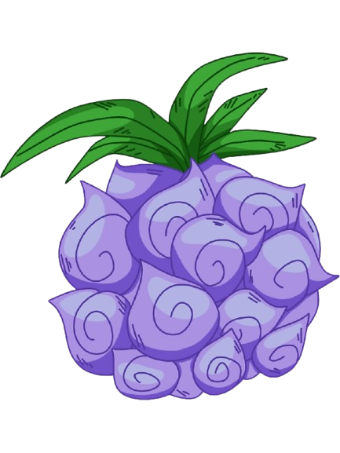

Marshall D. Teach, mais conhecido como Barba Negra, é um dos personagens mais enigmáticos, perigosos e influentes de One Piece. Originalmente um membro da tripulação do Barba Branca, ele traiu seus companheiros para roubar uma Akuma no Mi poderosa, iniciou uma série de eventos que culminaram na Guerra de Marineford, e acabou se tornando um dos Yonkou (Imperadores do Mar). O que torna Teach ainda mais único é o fato de ser o único personagem conhecido que possui dois poderes de Akuma no Mi, algo até então considerado impossível.
A fruta que ele roubou e usa como principal é a Yami Yami no Mi, uma fruta do tipo Logia que lhe concede o poder da escuridão. No entanto, essa Logia se comporta de maneira completamente diferente das demais frutas do mesmo tipo, o que a torna extremamente especial e perigosa.
Normalmente, uma fruta do tipo Logia permite ao usuário se transformar em um elemento natural, tornando-o intangível. Isso significa que ataques físicos não o atingem diretamente, já que seu corpo se torna fumaça, fogo, raio, areia, etc. Porém, no caso de Barba Negra, a Yami Yami no Mi não oferece intangibilidade. Pelo contrário: Teach sente toda a dor dos ataques que recebe, talvez até mais intensamente, já que a escuridão “absorve tudo” — inclusive os impactos.
Em compensação, a Yami Yami no Mi possui uma habilidade absolutamente única entre todas as frutas conhecidas: ela permite que Teach anule completamente os poderes de outras Akuma no Mi ao tocar seus usuários. Ao entrar em contato físico com alguém, ele consegue impedir que a pessoa use sua fruta, mesmo que seja uma Logia ou uma Zoan. Essa habilidade coloca Barba Negra em vantagem contra qualquer oponente, já que pode “desligar” poderes temporariamente e então atacar com força total.
Além disso, a escuridão que Teach manipula funciona como um buraco negro. Ele pode absorver ataques, objetos, até mesmo pessoas, como se tudo estivesse sendo tragado para dentro de sua escuridão. Ele também consegue lançar essa escuridão em forma de ataques destrutivos, criando uma força gravitacional capaz de puxar e destruir tudo ao redor.
Outro aspecto que torna a Yami Yami no Mi única é a possível ligação com a habilidade de Barba Negra de possuir dois poderes de Akuma no Mi. Após a morte de Barba Branca, Teach foi capaz de obter a Gura Gura no Mi, a fruta do terremoto, considerada uma das mais destrutivas de todo o mundo. Isso vai contra a regra absoluta de que um corpo não pode conter mais de uma Akuma no Mi, pois isso resultaria na morte do usuário. Muitos personagens comentam que Teach “não tem um corpo normal”, o que pode indicar uma condição especial, seja física, espiritual ou ligada diretamente à sua fruta original, a Yami Yami no Mi, que talvez tenha a capacidade de armazenar múltiplos poderes.